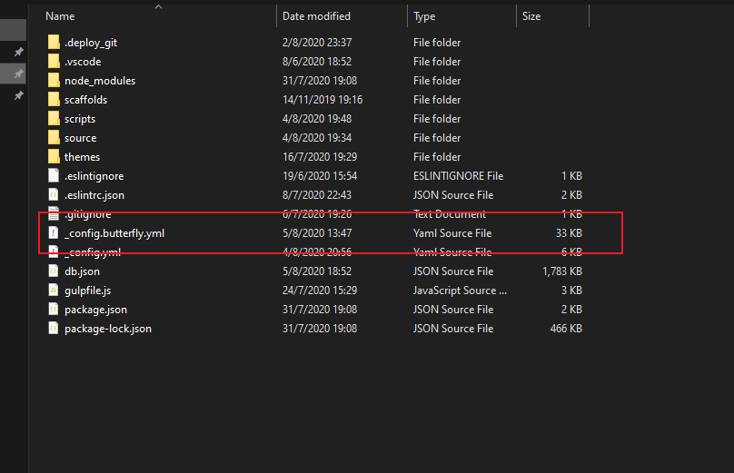

Butterfly 安装文档(一) 快速开始
📖 本教程更新于 2021 年 03 月 19 日，教程的内容针对最新稳定版而更新（如果你是旧版，教程会有些出入，请留意）
🦋 Butterfly 已经更新到 3.7.0
如果有安装这两个插件的，请卸载掉，会导致主题报错。
hexo-inject 和 hexo-neat
hexo-theme-butterfly是基于Molunerfinn的hexo-theme-melody的基础上进行开发的。
文档也是在hexo-theme-melody的文档基础上修改。因为一些配置变更导致与原主题配置上有部分区别。故如果安装hexo-theme-butterfly主题，请参考这篇文档。
安装
稳定版【建议】
在你的博客根目录里
1 | git clone -b master https://github.com/jerryc127/hexo-theme-butterfly.git themes/butterfly |
测试版
测试版可能存在Bugs，追求稳定的请安装稳定版
如果想要安装比较新的dev分支，可以
1 | git clone -b dev https://github.com/jerryc127/hexo-theme-butterfly.git themes/butterfly |
升级方法：在主题目录下，运行git pull
稳定版【建议】
在你的博客根目录里
1 | git clone -b master https://gitee.com/iamjerryw/hexo-theme-butterfly.git themes/butterfly |
测试版
测试版可能存在Bugs，追求稳定的请安装稳定版
如果想要安装比较新的dev分支，可以
1 | git clone -b dev https://gitee.com/iamjerryw/hexo-theme-butterfly.git themes/butterfly |
升级方法：在主题目录下，运行git pull
此方法只支持Hexo 5.0.0以上版本
在你的博客根目录里
1 | npm i hexo-theme-butterfly |
升级方法：在博客根目录下，运行 npm update hexo-theme-butterfly
应用主题
修改站点配置文件_config.yml，把主题改为butterfly
1 | theme: butterfly |
安装插件
如果你没有 pug 以及 stylus 的渲染器，请下载安装：
1 | npm install hexo-renderer-pug hexo-renderer-stylus --save |
升级建议
为了减少升级主题后带来的不便，请使用以下方法 （建议，可以不做）。
此方法只支持 Hexo 5.0.0 以上版本，建议使用。
如果已经在
source/_data/创建了butterfly.yml，请记得删除掉。
把主题文件夹中的 _config.yml 复製到 Hexo 根目录里，同时重新命名为 _config.butterfly.yml。
以后只需要在 _config.butterfly.yml进行配置就行。
Hexo会自动合併主题中的_config.yml和 _config.butterfly.yml里的配置，如果存在同名配置，会使用_config.butterfly.yml的配置，其优先度较高

从 3.3.0 开始，这种方法不再支持